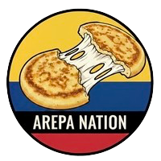

Overview
Purpose
The purpose of Arepa Nation is to introduce and share the rich tradition of Colombian arepas with a wider audience, especially people in Rexburg who may not be familiar with this staple food. The site will showcase the history, cultural significance, and variety of arepas, while also providing recipes, preparation tips, and serving ideas. Ultimately, the goal is to celebrate Colombian culture through food and make arepas more accessible and appealing to an international audience.
Audience
Rexburg-based food enthusiasts who are curious about trying international dishes, particularly Latin American cuisine. It also serves Colombian expatriates and Latin American communities in Rexburg who want to connect with their roots and share authentic flavors with friends and family. This audience includes BYUI students, young families, and community members who are open to new food experiences, interested in learning about cultural traditions, and eager to try approachable recipes that bring a taste of Colombia into their kitchens.
Branding
Website Logo
Style Guide
Color Palette
| Primary | Secondary | Accent 1 | Accent 2 |
|---|---|---|---|
Typography
Heading Font: Trebuchet MS
Paragraph Font: Arial
Normal paragraph example
Arepas are a traditional Colombian dish made from ground cornmeal, water, and a pinch of salt, shaped into round patties and cooked on a griddle until golden. Soft on the inside and slightly crispy on the outside, arepas have been a staple food in Colombian homes for centuries. They are versatile and can be enjoyed plain with butter, filled with cheese, or split open and stuffed with meats, eggs, or vegetables. Their simplicity and adaptability have made them a cultural icon across Colombia.
Colored paragraph example
Beyond being just food, arepas carry deep cultural significance as a symbol of Colombian identity and heritage. They are present in daily meals as well as in special gatherings, uniting families and communities around the table. Today, arepas are gaining international popularity, with food lovers in many countries discovering their rich flavor and endless variations. Whether eaten as breakfast, dinner, or a snack, arepas represent comfort, tradition, and the warmth of Colombian cuisine.
Navigation with Hover
Site Map
Wireframes
Home